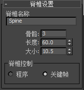

您可以将 3ds Max CAT 两足动物角色转化为到兼容 Maya 的 HumanIK 角色。此兼容性可让您将角色结构、定义和动画从 3ds Max 传递到 Maya 中 HumanIK 骨架上的 FK 表示。可以在 3ds Max 中的原始 CAT 角色上更新在 Maya 中创建的任何更改或新动画。然后，您可以继续在 3ds Max 场景的上下文中设置动画。
注： 此功能仅在 Maya 用作 Autodesk Entertainment Creation Suites 的一部分时可用。
将 CAT 角色发送到 Maya 的步骤
- 在 3ds Max 中，创建 CAT 两足动物角色，并将其放置为 T 形站姿。（请参见为 HumanIK 准备骨架。）
注： 需要 T 形站姿，才能确保在将 CAT 角色传递到 Maya 中的 HumanIK 以后，它会具有有效的骨架定义。
- 选择一个脊椎骨，并打开“修改”(Modify)面板。
- 将“脊椎控制”(Spine Control)设置为“关键帧”(Keyframe)并在显示的警告对话框中单击“是”(Yes)。

- 针对颈骨重复步骤 3 和 4。
- 选择您的 CAT 角色，并将其发送到 Maya（
 >“发送到 > 发送到 Maya > 作为新场景发送”(Send to > Send to Maya > Send as New Scene)）。
>“发送到 > 发送到 Maya > 作为新场景发送”(Send to > Send to Maya > Send as New Scene)）。
选择角色的一个元素会将整个角色发送到 Maya。
注： 如果 CAT 角色不是有效的两足动物，它将被发送到 Maya，而不具有骨架定义。如果 CAT 角色是一只带有多余肢体的两足动物，两足部分结构将被转化为 HumanIK，而剩余的肢体将转化为简单的关节。Maya 将打开并加载 CAT 角色作为具有有效骨架定义的 HumanIK 角色。从 3ds Max 传递的任何动画均将烘焙到角色的 HumanIK 骨架和/或简单关节。
- 在 Maya 中设置此 HumanIK 角色的动画。
若要使用 HumanIK 控制装备，请打开 HumanIK 窗口（“骨架 > HumanIK”(Skeleton > HumanIK)或“窗口 > 动画编辑器 > HumanIK”(Window > Animation Editors > HumanIK)）并确保角色名称显示在角色(Character)菜单中。
-
从“源”(Source)菜单中选择“控制装备”(Control Rig)。如果您的角色没有控制装备，那么选择此选项会自动创建新装备。
若要从另一个 HumanIK 源将动画重定方向，请将其他 HumanIK 角色作为“源”(Source)指定给您的 CAT 角色。
在 3ds Max 中的 CAT 角色上更新动画的步骤
- 在 HumanIK 窗口中，单击
 >“烘焙 > 烘焙到骨架”(Bake > Bake To Skeleton)。
>“烘焙 > 烘焙到骨架”(Bake > Bake To Skeleton)。
- 执行下列操作之一将动画发送回 3ds Max：
- 单击 Maya 状态栏中的“更新”(Update)按钮。
- 选择“文件 > 发送到 3ds Max > 更新当前场景”(File > Send to 3ds Max > Update Current Scene)。
现在，在 Maya 中所做的更改在原始 3ds Max 场景中可用。